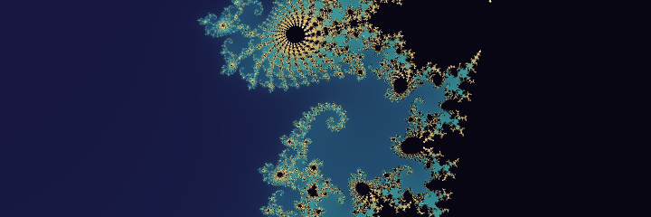

Opus 5.5 · v1
Anthropic · Claude.ai (Web)
1.8 mean rank
standing 1 (tie)
Phase-1 overall scores
- HTML
- 8.5/10
- Transcript
- 7/10
- Browser
- 8/10
Experiment results
Eight AI coding assistants each built a WebXR Mandelbrot room; blind reviewers scored every build and five blind judges ranked them.

Eight AI coding assistants each built a standalone WebXR page that visualizes the Mandelbrot set in a virtual room, from one of two prompts (v0 and v1; v0 for two, v1 for six builds). In phase 1, every page was reviewed blind by three kinds of reviewer (HTML, Transcript and Browser), each scoring six criteria from 1 to 10 plus an overall score. In phase 2, five blind judges, each working from different material (HTML, Transcript, HTML + Transcript, Browser and Browser + HTML), ranked all eight from best to worst. The mean of those ranks is the consensus used below.
The judges broadly agree:
- Top four: the two Opus 5.5 builds, then the two GPT6 Pro builds, in every judge's list.
- Bottom two: the two Copilot builds, in every list except the transcript judge's.
- Exceptions:
- The browser judge put GPT6-Pro-v1 first and Opus-v1 fourth, based on what a desktop user sees first: the room's polish and the XR-info dialog.
- The transcript judge put Gemini last, because it shipped a shader that failed to compile and was never verified.
Computed by this site from the five RANKING.md files and judge-mapping.json. Mean rank = the average of a candidate’s ranks over the judges that ranked it; candidates with equal means share a place.
Opus 5.5 · v1, Opus 5.5 · v0, GPT6 Pro · v1 and GPT6 Pro · v0. Opus 5.5 · v1 and Opus 5.5 · v0 tie on mean rank 1.8.
5/5 judges have these four in their top 4.
Copilot Autopilot · v1 and Copilot Interactive · v1.
4/5 judges have these two in their bottom 2. Differs: Transcript.
| Judge | Candidate | Rank | Mean | Δ |
|---|---|---|---|---|
| Transcript | Gemini 4 Argon · v1 | 8 | 5.6 | +2.4 |
| Browser | Opus 5.5 · v1 | 4 | 1.8 | +2.2 |
| HTML + Transcript | GPT6 Pro · v1 | 4 | 3.0 | +1.0 |
| HTML | Opus 5.5 · v1 | 1 | 1.8 | −0.8 |
| Browser + HTML | Opus 5.5 · v1 | 1 | 1.8 | −0.8 |
Rank = that judge’s rank; Δ = rank − mean rank; + means the judge placed it lower (worse) than the consensus. For each judge the candidate with the largest |Δ| is shown, largest first.
Ordered by mean rank; the same cards as on the Candidates page. Scores are the phase-1 reviewers’ overall scores out of 10; Details has each review and every judge’s justification. Play opens the product, unmodified, as a full page.
Anthropic · Claude.ai (Web)
1.8 mean rank
standing 1 (tie)
Phase-1 overall scores
Anthropic · Claude.ai (Web)
1.8 mean rank
standing 1 (tie)
Phase-1 overall scores
OpenAI · ChatGPT (Web)
3.0 mean rank
standing 3
Phase-1 overall scores
OpenAI · ChatGPT (Web)
3.4 mean rank
standing 4
Phase-1 overall scores
Google · Gemini (Web, Canvas)
5.6 mean rank
standing 5
Phase-1 overall scores
Mistral · Le Chat / Vibe (Code, web)
5.8 mean rank
standing 6
Phase-1 overall scores
GitHub · Copilot Tasks (cloud session)
6.8 mean rank
standing 7
Phase-1 overall scores
Play Copilot Autopilot · v1 Details on Copilot Autopilot · v1
GitHub · Copilot Tasks (cloud session)
7.8 mean rank
standing 8
Phase-1 overall scores
Play Copilot Interactive · v1 Details on Copilot Interactive · v1
Each judge’s rank (1 = best) and the mean derived. The strip plots the five ranks on a 1–8 scale; the vertical tick is the mean. The rankings page has the full sortable matrix, spread and judge agreement.
| Candidate | Standing | Mean | HTML | Transcript | HTML + Transcript | Browser | Browser + HTML | Rank strip |
|---|---|---|---|---|---|---|---|---|
| Opus 5.5 · v1 | 1 (tie) | 1.8 | 1 | 2 | 1 | 4 | 1 | |
| Opus 5.5 · v0 | 1 (tie) | 1.8 | 2 | 1 | 2 | 2 | 2 | |
| GPT6 Pro · v1 | 3 | 3.0 | 3 | 4 | 4 | 1 | 3 | |
| GPT6 Pro · v0 | 4 | 3.4 | 4 | 3 | 3 | 3 | 4 | |
| Gemini 4 Argon · v1 | 5 | 5.6 | 5 | 8 | 5 | 5 | 5 | |
| Mistral Large 4 · v1 | 6 | 5.8 | 6 | 5 | 6 | 6 | 6 | |
| Copilot Autopilot · v1 | 7 | 6.8 | 7 | 6 | 7 | 7 | 7 | |
| Copilot Interactive · v1 | 8 | 7.8 | 8 | 7 | 8 | 8 | 8 |
Same numbers as the aggregated table in Judge/README.md GitHub.